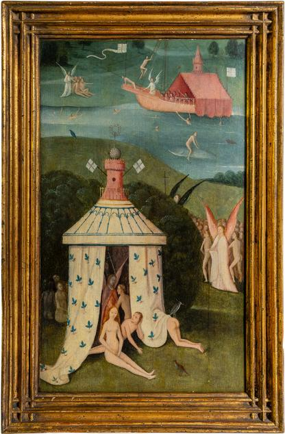
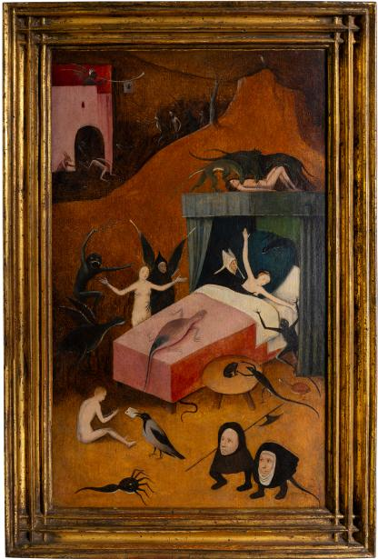
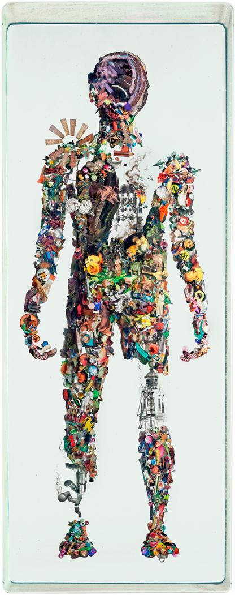
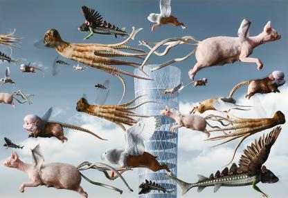
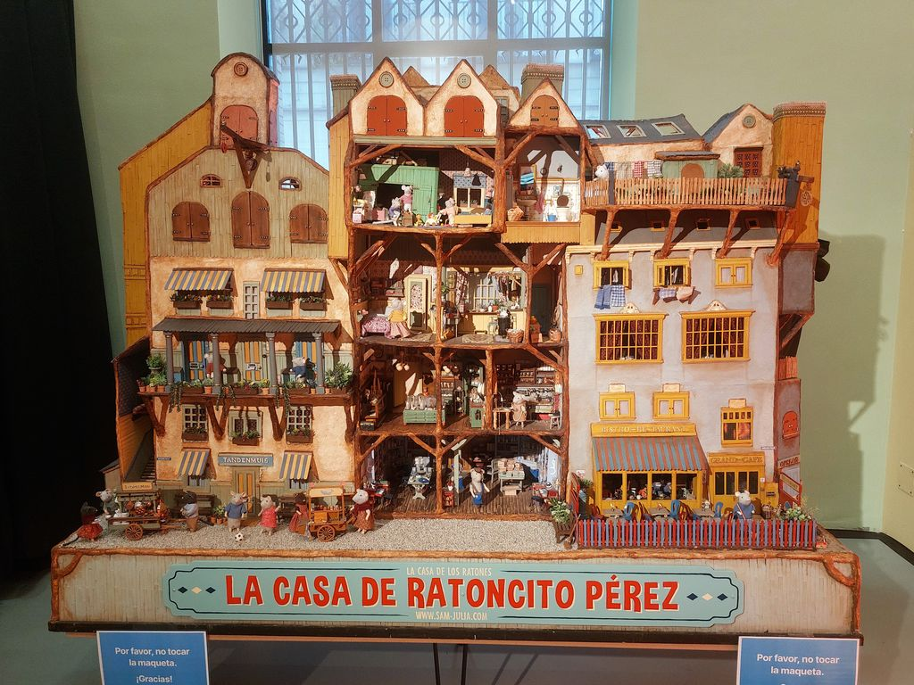
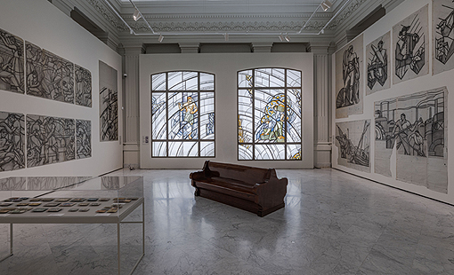
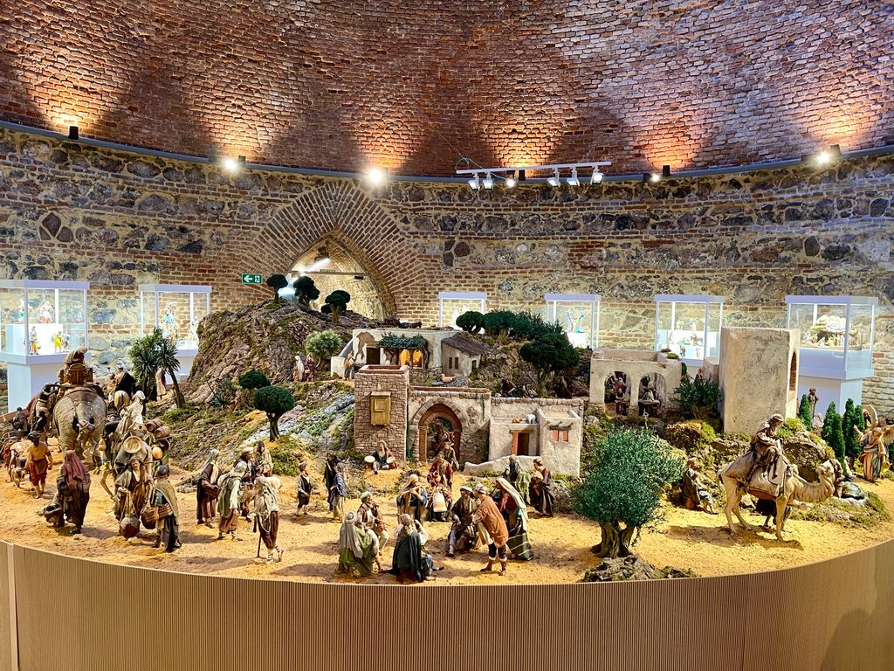
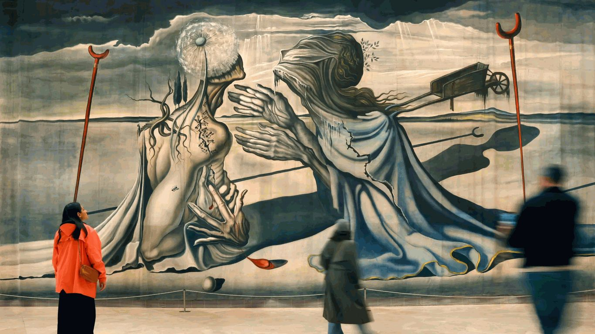
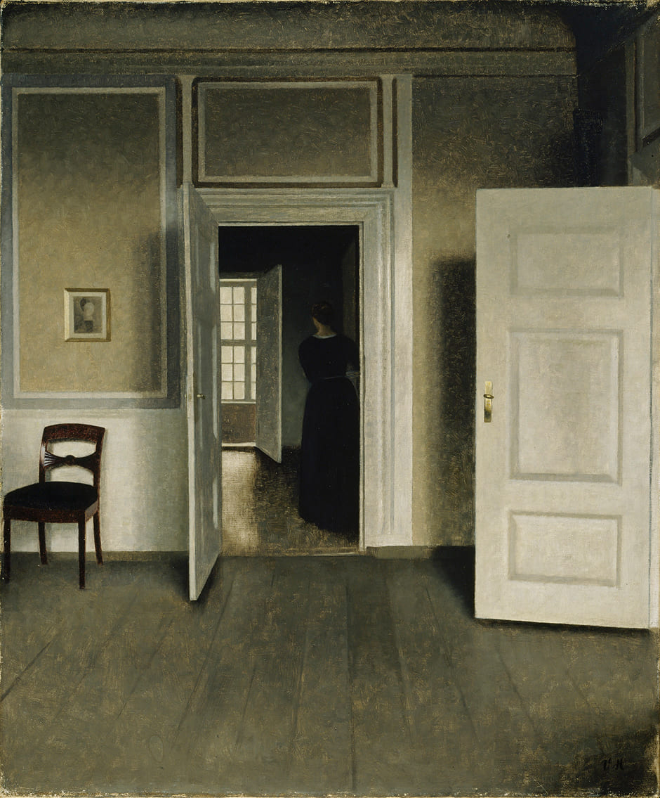
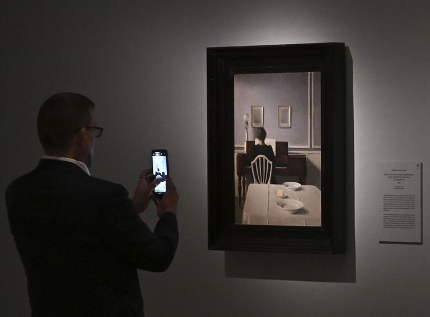

Exposiciones.:
Venta de entradas | Madrid Destino
Conciertos fundacionmutua.es


Exposición "Wunderkammer" de Ana Juan Ilustradora de libros, ha colaborado con Revistas y Prensa
29.01 - 03.05.2026 CentroCentro Entrada gratuita
Martes - domingo, 10:00 - 20:00 h Planta 5




A la manera del Bosco (Fundación Juan March)
Organizada en colaboración con Solo Contemporary, esta exposición de pequeño formato presenta dos pequeñas tablas, El cielo y El infierno realizadas por un seguidor del Bosco ('s-Hertogenbosch, Países Bajos, c. 1450-1516) −procedentes de un tríptico perdido dedicado al tema de El juicio final−, junto a obras contemporáneas de carácter surrealizante, metamórfico y fantástico.
27 febrero - 12 abril 2026 | Fundación Juan March Madrid. Castelló 77
 Exposición "Liberation. Paris 1944. Españoles, exilio y resistencia" pendiente fecha
Exposición "Liberation. Paris 1944. Españoles, exilio y resistencia" pendiente fechaEl Gobierno reformará el Chalé de la Reina del Campo del Moro para acoger una exposición sobre 'La Nueve' El pabellón de recreo de los jardines posteriores del Palacio Real será donde se celebre la muestra en homenaje a la compañía de blindados que, formada fundamentalmente por republicanos españoles, fue la primera en entrar en París para liberarla de los nazis

La Casa Del Ratoncito Perez De Karina Schaapman Casa Encendida


Puertas abiertas. Visita el Banco de España

Alegorias de un porvenir - Exposición Banco Españaaborda el impacto del movimiento art déco en su sede principal de Cibeles

Montaña Artificial del Retiro se expone un Belén monumental sicilianoCOLECCION BASANTA MARTÍN con figuras de Ángela Tripi, muy detalladas, junto a otros conjuntos de belenes también italianos.
.jpg) Lujo, calma y voluptuosidad | Henri Matisse (1904)
Lujo, calma y voluptuosidad | Henri Matisse (1904)Chez Matisse. El legado de una nueva pintura CaixaForum
Antonio Raphael Mengs (1728-1779) - Exposición - Museo Nacional del Prado
figura clave en el nacimiento del Neoclasicismo 25/11/2025 - 1/3/2026
Picasso y Klee en la colección de Heinz Berggruen Thyssen
Obras del Museum Berggruen, Neue Nationalgalerie de Berlín
Del 28 de octubre de 2025 al 1 de febrero de 2026


Picasso y Paul Klee se enfrentan en el Thyssen
 Jackson Pollock Número 27, 1950
Jackson Pollock Número 27, 1950Warhol, Pollock y otros espacios americanos
Del 21 de octubre de 2025 al 25 de enero de 2026
.jpg) Andy Warhol_Coca-Cola (1961)
Andy Warhol_Coca-Cola (1961)Warhol, Pollock y otros espacios americanos
Las esculturas de Juan Muñoz ya están en la puerta del Museo del Prado para la exposición "Juan Muñoz. Historias de Arte"
A partir del 18 de noviembre
Juan Muñoz. Historias de Arte - Exposición - Museo Nacional del Prado
Los frescos de Carriacci de la Capilla Herrera en el Prado youtube.com
La capilla original, actualmente desaparecida, se encontraba en la iglesia de Santiago de los Españoles en Roma, símbolo del poder de la monarquía hispánica en aquella ciudad
conjunto excepcional del barroco italiano, rescatado tras el desmantelamiento de la capilla en 1833
Los frescos de Carriacci de la Capilla Herrera en el Prado Así ha sido el montaje
Capilla Herrera - Museo Nacional del Prado Edificio Villanueva - sala 4
Capilla Herrera - Museo Nacional del Prado Edificio Villanueva - sala 4
Exposiciones en Madrid en el segundo trimestre de 2025 miradormadrid.com
Paolo Veronese (Pablo Veronés) (1528-1588) - Exposición - Museo Nacional del Prado
Paolo Veronese (Pablo Veronés) (1528-1588) Expo Museo Nacional del Prado -rtve.es
Madrid metrópoli. El sueño de Antonio Palacios | CentroCentro
Exposición 08.04 - 06.07.2025 10:30 - 19:30 h Planta 1 Entrada gratuita
Exposición “Madrid metrópoli. El sueño de Antonio Palacios” -youtube
Antonio Palacios, el arquitecto visionario que reinventó Madrid
Alicia y su País de las Maravillas | CaixaForum
Proust y las artes | Museo Nacional Thyssen-Bornemisza
Proust y las artes | Turismo Madrid
Fundación MAPFRE presenta nuevas exposiciones
Próximamente retrospectiva dedicada a Raimundo de Madrazo
Del 18 de septiembre de 2025 al 18 de enero de 2026
La Galería de Arquitectura de Madrid acoge la exposición CONSTRUIR un vibrante homenaje al arte de edificar COAM hasta el 25 de abril de 2025
1924. Otros surrealismos | Fundación MAPFRE centenario (1924) de la publicación por André Breton del “Primer manifiesto del surrealismo” como punto de partida
"La Asunción" del Greco regresa al Museo del Prado más de un siglo después gracias a un acuerdo con el Art Institute de Chicago
Podrá visitarse a partir del 18 de febrero en la exposición “El Greco. Santo Domingo el Antiguo”
Ya se puede visitar El Greco. Santo Domingo el Antiguo una ocasión única para ver reunidas por primera vez desde su dispersión ocho de las nueve obras que el Greco realizó para el monasterio de Santo Domingo el Antiguo de Toledo, su primer gran encargo en España
‘Caravaggio 2025’: tienes que ir a Roma | Traveler
EL VIAJE DEL AGUA | ALINA MURESSAN - Espacio Mados
Miquel Barceló | Flores, peces, toros (Galería Elvira González)
Miquel Barceló | Flores, peces, toros (Hermanos Álvarez Quintero, 1)
Una exposición de relojes será el marco para presentar los nuevos retratos de los Reyes realizados por Annie Leibovitz para la colección del Banco de España
del 27 de noviembre de 2024 al 29 de marzo de 2025
Interpretación significado líneas torcidas en el cuadro del rey (Annie Leibovitz) tan extrañas en estos retratos formales, y esa luz tan diferente en el de la reina
Henri Matisse La Fundación Canal (Madrid) inaugura una exposición que reúne algo menos de la mitad de todas las piezas que esculpió el francés a lo largo de su vida
José María García de Paredes. Espacios de encuentro
2 de octubre al 12 de enero de 2025
Gran retrospectiva de uno de los principales arquitectos españoles en la segunda mitad del siglo XX MUSEO ICO C/ Zorrilla 3
José María García de Paredes | La arquitectura de García de Paredes llega al ICO
Jaume Plensa. Materia interior | Espacio Fundación Telefónica
Colección Pérez Simón, una de las colecciones de arte más importantes de Hispanoamérica con más de 200 obras de El Greco, Van Dyck, Renoir o Van Gogh Centro-Centro | desde el 20 de septiembre al 12 de enero, de martes a domingo.
La entrada general tiene un precio de 7 euros e incluye audioguía. La entrada reducida cuesta 5 euros
La exposición ‘Setenta grandes maestros de la colección Pérez Simón’
Del 20 de septiembre al 12 de enero de 2025, CentroCentro acogerá la exposición
Sorolla, cien años de modernidad - hoyesarte.com
Reabre el Museo ABC
Rosario de Velasco | Exposición | Thyssen-Bornemisza
Rosario de Velasco | Exposición | Thyssen-Bornemisza Del 18 de junio al 15 de septiembre de 2024
Arte y naturaleza | Exposición | CaixaForum Madrid
Exposición Antonio Palacios en la Real Casa de Correos (Sol), nos colamos en la Puerta del Sol de 1936.
Arte y transformaciones sociales en España (1885-1910)
Museo Nacional del Prado. 21 mayo al - 22 de septiembre
Arte y transformaciones sociales en España (1885-1910)
Museo Nacional del Prado Visita virtual
Exposición dedicada a Antonio Palacios Este 2024 se cumplen 150 años del nacimiento de Antonio Palacios
En esta maqueta que puede verse en la exposición dedicada a Antonio Palacios en la Real Casa de Correos, nos colamos en la Puerta del Sol de 1936. PHotoEspaña 2024: lo más destacado de la XXVII edición del festival internacional
Luz de intuición | Exposición que forma parte de la Sección Oficial de PHotoESPAÑA 2024
Real Jardín Botánico 20 de mayo / 1 de septiembre 2024
Paloma Navares (Burgos, 1947), Premio Trayectoria Fundación ENAIRE 2024, responde a diversos procesos de investigación en los que indaga las temáticas sociales. Especialmente profundiza en el mundo de la mujer, sus ritos, costumbres y tradiciones; las emociones internas y sus extremos.
MUSEO ICO C/ Zorrilla, 3 Exposiciónes @museoico
MUSEO ICO C/ Zorrilla, 3 Exposiciónes 2024
"Pueblos de Colonización. Miradas a un paisaje inventado" MUSEO ICO C/ Zorrilla, 3
Del 14 de febrero de 2024 al 12 de mayo de 2024
Noemi Iglesias Barrios. Love Me Fast Museo Nacional Thyssen-Bornemisza
Del 29 de enero al 28 de abril de 2024
Noemi Iglesias Barrios. Love Me Fast perspectiva de género
Opera Gallery C. de Serrano 56
Opera Gallery Madrid | Turismo Madrid
Opera Gallery por fin abre en España, y lo hace con la escalera (helicoidal) más bonita de Madrid (y la exposición)
Manolo Valdés "Allegro" El arte del Cristal | Opera Gallery video RTVE
Manolo Valdés "Allegro" El arte del Cristal | Opera Gallery 29 Feb -13 Abril 2024
 La pamela, La mariposa, Los aretes, La diadema, La doble imagen y Mariposas | Fundición Capa esculturas | Manolo Valdés
La pamela, La mariposa, Los aretes, La diadema, La doble imagen y Mariposas | Fundición Capa esculturas | Manolo ValdésCiudad de las Artes y las Ciencias, Valencia
Antes de América | Fundación Juan March Fuentes originarias en la cultura moderna
6 octubre 2023 - 10 marzo 2024 Domingo, 10 de marzo (último día de exposición): 10 - 20 H
10 exposiciones de arte que debes visitar antes de que llegue la primavera
"Al bies" la exposición que indaga en las artistas de la vanguardia española
Museo Nacional de Artes Decorativas hasta el 31 de marzo
Museo Nacional de Artes Decorativas Exposición 'Al bies '
Una exposición gratuita trae a Madrid obras de Sorolla, el Bosco y Rubens
Muestra del Museo de Bellas Artes de Valencia que se podrá ver en la Fundación María Cristina Masaveu Peterson
desde el 28 de febrero hasta el 14 de julio
MACBA en Barcelona Mutua Madrileña gratis
Exposición «La arquitectura de Eduardo de Adaro y el Banco de España»
del 24 de octubre de 2023 al 24 de febrero de 2024
Exposición «La arquitectura de Eduardo de Adaro y el Banco de España»
La historia de la construcción mediante planos, dibujos, fotografías, objetos, la gran maqueta, ejemplos de decoración original... en el propio Banco
Exposición fotográfica "Cristina de Middel. Cartas al director" Canal Isabel II
El espejo perdido. Judíos y Conversos en la España Medieval Museo del Prado
Medardo Rosso. Pionero de la escultura moderna Mapfre
Del 31 de octubre de 2023 al 4 de febrero de 2024
Jorge Juan, el descubridor de la Tierra achatada por los polos Museo Naval
El legado de un marino científico que será inaugurada el próximo 23 de noviembre
Otro Renacimiento' | Museo del Prado
75 obras de creadores que se nutrieron en el Nápoles español y renacentista
Pedro Fernández, Bartolomé Ordoñez, Diego de Siloé, Pedro Machuca
'La Virgen del pez', de Rafael, La musculosa 'Templanza', de Berruguete

‘El universo freudiano de Dalí’, una joya del Museo Nacional Thyssen-Bornemisza
La exposición explora la fascinación del artista por el pensamiento de Freud y el encuentro que ambos mantuvieron en Londres en 1938.


Exposición Ana Locking. Nostalgia / Utopía Sala Canal de Isabel II
repasa la trayectoria de la diseñadora, del 4 de marzo al 12 de julio
Calle de Sta Engracia, 125
Martes a sábados: de 11.00 a 20.30 h
Domingos: de 11.00 a 14.00 h2026


Hammershøi. El ojo que escucha Museo Nacional Thyssen-Bornemisza
Del 17 de febrero al 31 de mayo de 2026

En el marco de su 30 aniversario, la exposición Transitar el siglo XX. Dibujo y escultura en las Colecciones ICO rinde homenaje a los orígenes del museo. Inaugurado en 1996, esta muestra no sólo explora la evolución de la escultura a lo largo del siglo XX, también es una excusa para disfrutar de piezas de las Colecciones ICO que, por primera vez desde hace más de quince años, vuelven a exhibirse en el propio Museo. Esto incluye grandes firmas como Pablo Picasso, Julio González o Juan Gris, junto a creadores contemporáneos, como Miquel Barceló o Susana Solano.
Transitar el siglo XX. Dibujo y escultura en las Colecciones ICO
10 febrero al 10 de mayo de 2026
De martes a sábado: 11.00 - 20.00 h. Domingo y festivos: 10.00 - 14.00 h.


Colección Masaveu. Arte español del siglo XX. De Picasso a Barceló
Exposición que reúne las cien obras más destacadas de la Colección Masaveu de este siglo.
Un centenar de pinturas y esculturas muy representativas de distintos movimientos y artistas entre los que se encuentran: Pablo Picasso, María Blanchard, Juan Gris, Sorolla, Joan Miró, Salvador Dalí, Luis Fernández, Antonio López, Carmen Laffón, Antoni Tàpies, Manuel Millares, Eduardo Chillida, Esteban Vicente, Juan Genovés, Eusebio Sempere, Soledad Sevilla, Pablo Palazuelo, Cristina Iglesias, Juan Muñoz o Miquel Barceló, entre otros. 09 OCTUBRE, 2024 – 19 JULIO, 2026
Es gratuita con reserva web. C. de Alcalá Galiano, 6 detras edificio Colón

Exposición: Naturaleza de asfalto. Madrid hiperrealista. José Miguel Palacio
Selección de óleos del artista plástico contemporáneo José Miguel Palacio, en los que retrata la ciudad de Madrid como un gran escenario en el que confluyen el paisaje urbano, la movilidad y el frenesí de la vida cotidiana. Museo de Historia C/ de Fuencarral
Del 16 de diciembre de 2025 al 24 de mayo de 2026
De martes a domingo de 10:00 a 20:00 horas Entrada gratuita
.jpg)
Exposición “Máscara y compás" de Maruja Mallo (1902-1995)
Fue una de las grandes figuras de la Generación del 27, junto a Lorca, Dalí, Alberti o Zambrano..
Artista visionaria, adelantada a su tiempo, que transformó el arte del siglo XX y abrió nuevos caminos para las mujeres creadoras.
Surrealista Maruja Mallo del 8 de octubre de 2025 al 16 de marzo de 2026.
Incluye unas 80 pinturas, dibujos, escritos, y documentos, sigue cronológicamente la trayectoria de la artista en sus diversas etapas.

Maruja Mallo | Joven Negra (1948)
El Reina Sofía sucumbe a la moda de Maruja Mallo y compra un cuadro por 300.000€
Warhol, Pollock y otros espacios americanos
21 de octubre de 2025 al 25 de enero de 2026 Museo Nacional Thyssen-Bornemisza
La exposición, que cuenta con la colaboración de la Comunidad de Madrid y el Ayuntamiento de Madrid, reúne más de cien obras, muchas nunca vistas en España. Proceden de una treintena de instituciones de Norteamérica y Europa y están firmadas por Warhol, Pollock y otros artistas como Lee Krasner, Helen Frankenthaler, Marisol Escobar, Sol LeWitt y Cy Twombly. Entre ellas, Marrón y plata I de Pollock, Express de Robert Rauschenberg y Sin título (verde sobre morado) de Mark Rothko, de la colección Thyssen.
LAS SINSOMBRERO | Maruja Mallo, Margarita Manso, Salvador Dalí y Federico García Lorca en la Puerta del Sol
“Maestras” Thyssen
Del 31 de octubre de 2023 al 4 de febrero de 2024
“Maestras” Thyssen -eldiario.es
Picasso, lo sagrado y lo profano Thyssen
Del 4 de octubre de 2023 al 14 de enero de 2024
Exposiciones Madrid que no te puedes perder elmiradordemadrid.es
5 exposiciones de arte que no me pienso perder este otoño
Exposiciones | Fundación Ibercaja
Conciertos | Cultura | Fundación Mutua
Mamut Edad de Hielo CaixaForum
Mundos. Goya y Fabelo Condeduque Madrid
Visitas a la escalera monumental del Cuartel General de la Armada Expo sáb 11:30
Museo Naval | escalera monumental del Cuartel General de la Armada
Instituto Geográfico Nacional (IGN) | Centro Nacional de Información Geográfica (CNIG)
Real Observatorio de Madrid - Instituto Geográfico Nacional Visitas
Edificio Villanueva: es el edificio principal del Observatorio, obra de Juan de Villanueva, consta de tres partes: Rotonda central donde se localiza el Péndulo de Foucault que ilustra la rotación diaria de la tierra y la colección de instrumentos, Círculo meridiano de Repsold (1854) y la espléndida biblioteca, con numerosos libros antiguos. Telescopio de Herschel: se puede admirar la réplica del Gran telescopio de William Herschell de 60 cm de diámetro y 25 pies de distancia focal, datado de 1796-98, y que fue destruido en 1808 durante la ocupación napoleónica.
Sala de las Ciencias de la Tierra y el Universo: incluye una maravillosa colección de instrumentos de Astronomía, Geodesia y Geofísica, de los siglos XIX y XX.
Obras maestras españolas de la Frick Collection - Exposición - Museo Nacional del Prado
Juan Muñoz exposición por el 70 aniversario de su nacimiento | Sala Alcalá 31 junio 2023
"Juan Muñoz. Todo lo que veo me sobrevivirá" en Sala Alcalá 31
Exposición “Madrid en la Colección Abelló” | Casa de Correos
Arquería de Nuevos Ministerios Reapertura
Sorolla, Tápies, Juan Muñoz, Velázquez... los protagonistas de 2023 en el arte
Museo Reina Sofía nos descubre la mente de Francesc Tosquelles
LAS SINSOMBRERO | Teatro Fernán Gómez
LAS SINSOMBRERO | Maruja Mallo, Margarita Manso, Salvador Dalí y Federico García Lorca en la Puerta del Sol
LAS SINSOMBRERO: mujeres de la Generación del 27
La historia de por qué dejamos de usar sombreros
los rojos no usaban sombrero – General Dávila
Picasso y Chanel, unidos en la nueva exposición del Thyssen
Centro Cultural Casa de Vacas Retiro
Centro Cultural Casa de Vacas Exposiciones y Actividades
Exposición "Orígenes" de Javier Torices Centro Cultural Casa de Vacas
Espacio Cultural Serrería Belga C/ Alameda 15 |enfrente Caixabank
Andrea Levy inaugura la nueva Serrería Belga
Planes para disfrutar Madrid en septiembre madridsecreto.co
Fundación Canal | Canal Isabel II Fotografía | plaza Castilla
infoArte / fotoLog / artMedia
Luis Paret: el Prado rescata al pintor eclipsado por Goya Museo del Prado
Programación cultural de la Comunidad de Madrid
Visitas Guiadas Gratuitas al Palacio de Fomento
laventanadelarte.es Toda la información de espacios y exposiciones en España
En Madrid. Una Historia de la Moda, 1940-1970 Sala El Águila. Del 10 de marzo al 22 de mayo de 2022
Centro de Arte Complutense | El Jardín de las Hespérides
El gusto francés y su presencia en España (siglos XVII-XIX) fundacionmapfre.org
El gusto francés en España | Exposición | Fundación Mapfre | 2022
El Madrid de Sabatini. La construcción de una capital europea (1760- 1797)
El Madrid de Sabatini
‘La España romántica’: Un cruce de miradas entre Roberts y Villaamil
Real Academia de Bellas Artes de San Fernando
Espacio Ibercaja Delicias | Espectáculos y ocio Paseo de las Delicias 61
(acceso por el museo del Ferrocarril de Madrid)
Exposición "Alfonso. Cuidado con la memoria" en la Sala Canal de Isabel II
Colección Banco de España | Patrimonio artístico dos siglos de historia
Banco de España | REALES DE VELLÓN GOYA Y LOS ORÍGENES DE LA COLECCIÓN
Ricardo Sanz “La Luz como Esencia del Arte” Colegio de Ingenieros de Caminos, calle Almagro 42, entre el 20 de septiembre y el 8 de octubre
Magritte, el surrealista que hace sentir inteligente al espectador Thyssen-Bornemisza
ARTIST 360º Feria de Arte Contemporáneo - Edición Invierno | 23-27 febrero '22
Open House Madrid festival internacional de arquitectura que ofrece visitas guiadas
Museo del Prado Presentación a los medios. Exposición "Pasiones mitológicas" - YouTube
Museo del Prado | Tiziano sexo y dioses: las pasiones del Museo del Prado
Museo del Prado Exposición "Pasiones mitológicas"
Fundación Mª Cristina Masaveu Peterson -Alcalá Galiano, 6
Fundación Mª Cristina Masaveu Peterson LA COLECCIÓN DEL MUSEO DE BELLAS ARTES DE VALENCIA. ENTRE EL BOSCO Y SOROLLA
Fundación Mª Cristina Masaveu Peterson Exposición Pintura española del siglo XIX 2020
Fundación Mª Cristina Masaveu Peterson Exposición Pintura española del siglo XIX
Fundación Mª Cristina Masaveu Peterson Historia
Fundación Mª Cristina Masaveu Peterson LA COLECCIÓN DEL MUSEO DE BELLAS ARTES DE VALENCIA. ENTRE EL BOSCO Y SOROLLA
Colección Masaveu: Arte español del siglo XX. De Picasso a Barceló
todo el siglo XX está aquí (Del 9 de octubre de 2024 al 20 de julio de 2025)
Espacio.fundaciontelefonica.com Lunes cerrado
Fundación MAPFRE | Sala Recoletos - Barbara de Braganza, 13 - Recoletos
Fundación Mutua Madrileña - Exposiciones y Conciertos
Fundación Canal - Canal de Isabel II - Mateo Inurria 2 - Plaza Castilla
Centro de Exposiciones Arte Canal - Paseo de la Castellana, 214 - Plaza Castilla
Sala Canal de Isabel II - Santa Engracia 125 - Rios Rosas
Sala Alcalá 31 exposiciones de arte contemporáneo - calle Alcalá, 31
Sala Alcalá 31 Edificio Antonio Palacios - calle Alcalá, 31
Palacio de Fomento - Visitas teatralizadas y guiadas - Atocha -esmadrid.com
Palacio de Fomento - Visitas teatralizadas y guiadas - Atocha -ministerio agricultura
Espacio SOLO un museo secreto en Madrid
Biblioteca Nacional de España - El exilio republicano de 1939, ochenta años después
Casa de México en España Exposiciones